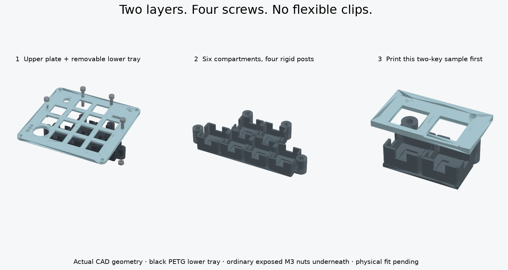

Two plates.
One removable lighting layer.
The upper plate holds the switches. The lower tray contains six light compartments and four rigid screw posts. Four screws join them; ordinary nuts stay exposed underneath. No flexible clips or glue hold the tray.
This is a new CAD design, not a physically verified fit. The sample uses the same switch openings, cups, posts and screw spacing as the full design.
1. Upper sample STL ↓2. Lower sample STL ↓Use two switches, two keycaps, two LEDs and two screw/nut pairs to test. Do not print the full plates until this and your joystick test fit pass.
See how the layers fit
Drag to rotate; scroll to zoom. Move the slider to separate the layers. Click a part to identify it.
Loading CAD…
Blue: upper plate · dark gray: lower baffle tray · silver: metal screws and nuts.
Actual exported CAD geometry. Electronics and wires are omitted here for clarity. The slider illustrates separation; remove the case screws and lift the pair out of the case before undoing the tray nuts.

What changes?
- New upper plate: the existing flat joystick v3 design with four extra 3.4 mm screw holes. The long snap clips are removed.
- One lower tray: all six cups are joined by a floor. Four solid posts set the spacing and support the screw load.
- Existing case: retained. Do not drill your old top plate freehand; print the matching candidate plate after testing.
- Four visible screw heads: at the outer edges of the key area. They sit above the top surface rather than in countersinks.
Extra hardware
| Part | Sample / full build | Link |
|---|---|---|
| M3 × 20 mm fully threaded socket cap screws, DIN 912; 5.5 mm head diameter, 3 mm head height | 2 / 4 | Exact size ↗ |
| M3 ordinary hex nuts, DIN 934; 5.5 mm across flats, 2.4 mm thick | 2 / 4 | Exact size ↗ |
| 2.5 mm hex key and 5.5 mm wrench or small socket | 1 each | Use existing tools if available. |
The two test pairs can be reused in the final assembly. These are additional fasteners, separate from the case screws and the much smaller joystick screws. Product dimensions were checked; stock, shipping and your existing inventory were not verified. Equivalent black screws of the same dimensions can be used.
Print settings
- Lower tray: black PETG. An opaque material helps block light. Bottom flat on bed, compartments up, supports off.
- Upper sample: white or clear PETG. Supplied visible-face-down orientation; switch retaining recesses face up, supports off.
- Both samples: 100% scale, 0.4 mm nozzle, 0.15 mm layers, four walls, 100% infill. Inspect thin walls and complete screw-hole paths in the slicer.
- Full upper plate is oriented differently: underside on the bed, raised joystick seats up. Review the shallow underside switch recesses; local support may be needed depending on your printer. Avoid filling holes with support.
Try the small sample
- Keep USB unplugged. Remove strings or burrs, then check that each M3 screw passes freely through both printed holes. Never force a screw to cut threads in these clearance holes.
- Join the empty parts. Cups face the underside of the upper sample. Slide screws down through the top and posts, then thread the exposed nuts on underneath. Hold each nut with a wrench and tighten gently until seated. The tray should not rock; do not crush the plastic.
- Check a real switch and keycap. Install the switches from above. Both should latch and press freely, with clearance from the new screw heads.
- Remove the lower sample. Undo the nuts and lower it. This exposes the switch pins for soldering. The baffle tray does not make the soldered switches hot-swappable.
- Dry-fit the LEDs. Each 9.1 mm LED board sits in a 9.7 mm pocket. The pocket locates it but does not clamp it. Use a removable, electrically insulating adhesive pad underneath, with no more than 0.2 mm total thickness allowed in this model. Insulate the rear pads and keep the emitting face clear. Do not force thicker foam tape into the available space.
- Check wiring space before soldering everything. LED leads pass through the small floor slots; switch/diode wires pass through the upper wall notches. Leave slack so the tray can lower about 20 mm without pulling a joint. Keep all conductors away from screw tips.
- Reassemble gently. Check actual switch pins, LED solder joints and insulation do not touch. The CAD allows a nominal 0.8 mm LED-to-pin gap, but real solder and component shapes may differ. Test one light only after checking the electrical wiring.
Send a side photo of the two layers joined, and tell me whether the screws fit, the tray rocks, and the keys move freely. Physical print strength and light isolation still need testing.
Full-size files — wait for the sample
These two parts form the finished pair. The full tray is stepped around the six lit keys so it leaves room for the encoder, joystick and other wiring.
Upper plate STL — WAIT · Upper STEP
Lower tray STL — WAIT · Lower STEP
Complete CAD/source kit · Assembly STEP — view only · CAD checks · Technical notes
Collision checks cover the modeled case, hardware, switch/pin and electronics envelopes. They do not prove real-world fit, printer tolerances, wiring access, optical performance or lifetime. The main site's older full-keyboard animation still shows individual adhesive cups.